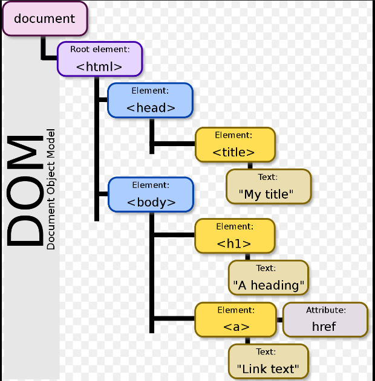
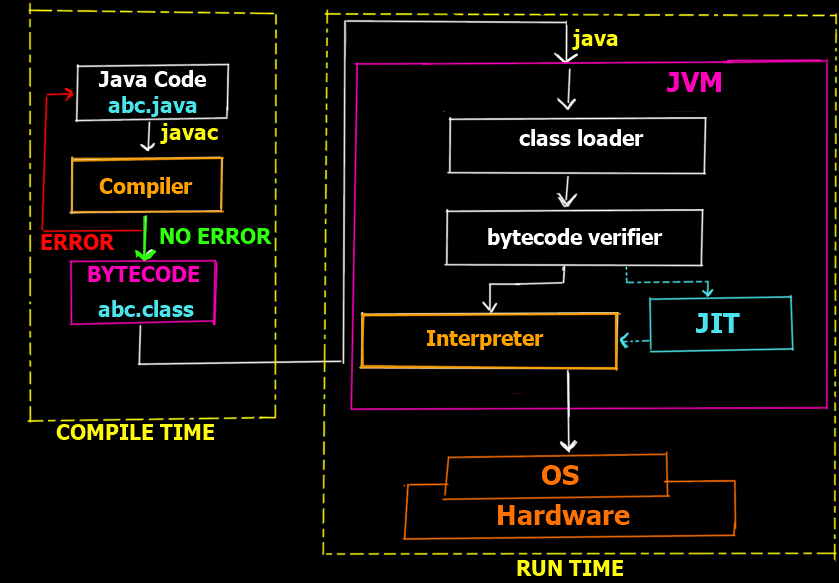

FullStack

Front: HTML, CSS, JavaScript
- HTML: DOM (Document Object Model) - a cross-platform and language-independent interface that treats an HTML or XML document as a tree structure wherein each node is an object representing a part of the document.
- CSS: Grid and Flexbox
- JavaScript: React, JQuery, Angular, Next, Vue
Javascript API for HTTP Requests from Front to Back
Back: Server and DB
- Node.js - Express
- Java/Kotlin - Spring
- Python - Django, Flask
- PHP
- Go
- Rust
- Ruby
- .NET?
MVC and DOM
The MVC separates the presentation layer from the business logic
- Model: stores & manages data. Often a database/server with biz logic.
- View: Graphical User Interface
The view is a visual representation of the data- like a chart, diagram, table, form.
The view contains all functionality that directly interacts with the user - like clicking a button, or an enter event.
- Controller: Connects the Model and the View. The controller receives input from view, uses logic to translate the input to a demand for the model, the model grabs the data, the controller passes data from the model back to the view for the user to see in a nice display.

Back: Security
Securing Your APIs

- Authentication vs. Authorization
- JWT & Bearer
- Oauth 1.0 vs OAuth 2.0
-
**Authentication and Authorization:**
- Implement strong authentication (API keys, OAuth, JWT, LDAP, SSO, SAML, MFA, IAM)
- Enforce authorization based on user roles and permissions
-
**Data Protection:**
- Use HTTPS to encrypt communication
- Validate and sanitize user inputs to prevent injection attacks
-
**Rate Limiting and Monitoring:**
- Limit requests per user/IP address to prevent DoS attacks
- Monitor API activity for suspicious patterns
-
**Additional Measures:**
- Consider using an API Gateway for centralized management
- Keep your API software and dependencies up-to-date
APIs are gateways to your data and functionalities. Here's how to ensure their security:
Authentication vs. Authorization
While used together, authentication and authorization serve distinct purposes:
Authentication
- Purpose: Verifies user/application identity (Who are you?)
-
Methods:
- API Keys (unique identifiers included in request headers)
- OAuth (industry standard for third-party app access)
- JWT (JSON Web Tokens: compact, self-contained tokens with user info)
Authorization
- Purpose: Determines user/application permissions after authentication (What are you allowed to do?)
-
Process:
- Checks user roles and permissions associated with their account.
- Can be implemented at different API levels (resource, operation, etc.).
Analogy: Imagine an API as a secure building.
- Authentication is like verifying ID at the entrance (confirms identity).
- Authorization is like checking an access badge (determines access areas).
Importance of Both
- Strong authentication ensures only authorized users/applications access the API.
- Proper authorization restricts authenticated users to permitted actions, preventing unauthorized data access or modifications.
Additional Considerations
- Choose the authentication method that best suits your API's needs.
- Regularly review and update user roles and permissions.
- Implement mechanisms to revoke compromised tokens or API keys.
JWT vs. Bearer Token
While related, JWTs and bearer tokens are not identical:
Bearer Token
- Simple authorization mechanism: a string granting access to the bearer.
- Doesn't contain user information or permissions itself.
- JWT is a popular secure format for bearer tokens.
JWT (JSON Web Token)
- Specific format for secure tokens containing claims (user info, permissions, expiration).
- Self-contained (JSON format with a signature for verification).
- Well-suited for implementing bearer token authorization.
Analogy:
- Bearer token: Like a key granting access.
- JWT: Like a keycard with encoded information (user ID, expiration).
JWT Generation
JWTs are typically generated on the server-side after successful user authentication.
Here's a simplified breakdown:
- User Login: User enters credentials.
- Authentication: Server validates user credentials.
- Claims Creation: Server creates claims (data) for the JWT including user ID, issuer, audience, expiration, and custom claims.
- Signing: Server signs the header and payload (encoded claims) with a secret key for integrity and authenticity.
- JWT Formation: Header, payload, and signature are base64url encoded and concatenated to form the JWT string.
- Token Delivery: Server sends the JWT back to the client application (often stored locally).
Security Concepts in General
OAuth vs JWT
Stack Overflow
Java
Jakarta and Javax are the enterprise versions of Java.


 java.util.concurrent
java.util.concurrent
Concurrency
What is it, and what is the difference between Concurrency and Async Programming
- Concurrency is a broader concept that refers to the ability to handle multiple tasks apparently at the same time. This can be achieved in two main ways:
Parallelism: This is where multiple tasks are genuinely running simultaneously on separate processors or cores.
Non-parallel concurrency: This occurs even with a single processor. The tasks are still managed concurrently, but the CPU rapidly switches between them, creating the illusion of parallelism. This is often achieved using threads.
- Asynchronous programming a specific technique used to achieve concurrency.
In asynchronous programming, a task is initiated but doesn't block the main thread while it's waiting to complete. The main thread can then move on to other tasks. When the asynchronous task finishes, it typically notifies the main thread through a callback function or similar mechanism.
- Analogy
Concurrency: Imagine you have two chefs (threads) in a kitchen. Concurrency allows them to cook multiple dishes (tasks) at the same time (parallelism) or switch between chopping vegetables for one dish and preparing ingredients for another (non-parallel concurrency).
Asynchronous programming: You order a pizza (initiate asynchronous task).
You don't have to wait by the phone for the pizzeria to call (main thread doesn't block).
You can answer emails or watch TV (do other tasks) In the meantime, the pizzeria calls you back (callback)
when the pizza is ready (asynchronous task finishes).
Async Example 2:Uber Driver. Imagine Calling an Uber, then you can still do stuff until the uber driver gets there, then he lets you know.
What are ways to achieve Concurrency?
- Threads
- Processes
- Async Programming
- Event Driven Programming
Explain the difference in Array, ArrayLists

Arrays are built in constructs to Java. There is a Arrays library you can import that allows for much better Array manipulation
An ArrayList is a resizeable array implementation of the list interface,
which is part of the Java Collections Framework. Unlike Arrays, Arraylist can dynamically grow and shrink in size. Internally,
ArrayList uses an array. When the array runs out of space, it creates a new one with more capacity and copies the data over.
This can bring temporary preformance impacts.
Key Features:
Dynamic Size: Grows and Shinks on the fly as items are added and removed
Indexed Access: Allows fast random access to elements using their index
Insertion Order: Maintins the order of elements as they are inserted.
Null Values: It can store null values
Not synchronized, making it faster but not thread safe. You need to manaully syncronize it is multiple threads access concurrently.
Common Methods:
add(E element)
add(int index, e) - Great example of an overridden method?
remove (index)
get(index)
set(index, element)
size()
isEmpty()
clear
contains(Object o)
Implementation Differences:
String[] carsArray = new String[5];
ArrayList<String> carsArrayList = new ArrayList<String>();
Explain the difference in String, StringBuilder, and String Buffer
String vs StringBuilder vs StringBuffer
These three classes are used to represent and manipulate textual data in Java. They differ in terms of mutability (the ability to change their content) and thread safety (how they behave in multithreaded environments):
Mutability
- String: Immutable. Once created, the content of a String object cannot be changed. Any attempt to modify it will result in a new String object being created.
- StringBuilder & StringBuffer: Mutable. These classes allow you to modify the content of the object after creation.
Thread Safety
- StringBuilder: Not thread-safe. If multiple threads access and modify a StringBuilder concurrently, it can lead to data corruption.
- StringBuffer: Thread-safe. All methods in StringBuffer are synchronized, meaning only one thread can access and modify the object at a time. This makes it suitable for multithreaded environments.
Performance
- StringBuilder: Faster. Due to the lack of synchronization, StringBuilder is generally faster than StringBuffer. It's the preferred choice for single-threaded applications.
- StringBuffer: Slower (but thread-safe). The synchronization overhead makes StringBuffer slightly slower.
When to use which:
Here's a quick guide on when to use each class:
- String: Use String when you have a fixed string value that won't change. Strings are immutable which makes them secure for multithreaded environments and improves memory management. String concatenation (+) internally uses StringBuilder or StringBuffer for efficiency.
- StringBuilder: Use StringBuilder for string manipulations in a single-threaded environment where performance is a concern. It's faster and more memory-efficient than StringBuffer.
- StringBuffer: Use StringBuffer when you need thread-safe string manipulation in a multithreaded environment. The synchronization ensures data consistency across threads.
**Summary Table:**
| Feature |
String |
StringBuilder |
StringBuffer |
| Mutability |
Immutable |
Mutable |
Mutable |
| Thread Safety |
Not thread-safe |
Not thread-safe |
Thread-safe |
| Performance |
Fastest |
Faster |
Slower |
| Use Case |
Fixed strings |
Single-threaded |
Multi-threaded |
Explain what a Java Bean is. Explain what a Pojo is and what if the difference
- POJO - A Plain Old Java Object is a class that has no restrictions or requirements tied to a specific framework or web dev framework
with specific annotations or naming conventions.
- Java Bean - a type of POJO that adheres to specific conventions for property access and serialization. They implement Serializable and hve 0 arg constructors
React--
React.js, or simply React, is a free and open-source JavaScript library created by Meta, formerly Facebook, for building user interfaces (UI) of web applications.
It allows you to build complex UIs by breaking them down into smaller, reusable pieces called components.
Here are some key aspects of React:
- Component-based architecture: React applications are built using reusable components. These components are like independent building blocks that you can combine to create complex UIs.
- JSX: React uses JSX, which is a syntax extension for JavaScript that allows you to write HTML-like structures within your code. This makes it easier to visualize and build UIs.
- Virtual DOM: React uses a virtual DOM, which is an in-memory representation of the actual DOM. When changes are made to the UI, React efficiently updates the virtual DOM and then applies the minimal changes required to the real DOM. This improves performance.
- React is a popular choice for building modern web applications due to its simplicity, flexibility, and performance. Many large companies like Netflix, Facebook, and New York Times use React for their web applications.
More Key Aspects:
- Props: Propeties. Args passed to Components via HTML Attributes
- Events: An action that signals user interaction or a system change. Events trigger functions you define to handle the user's interaction or state change
- Similar to DOM events in Vanilla JavaScript. Common examples include clicks, form submissions, key presses, or hovering over an element
- Synthetic Events: React uses a concept called Synthetic Events. These are cross-browser wrappers around the native browser events, ensuring consistent behavior across different browsers.
- Event Handlers: To respond to events, you create event handler functions. These functions are passed to React components using JSX syntax within curly braces (onClick={handleClick}).
- State
- In React, state is a JavaScript object that stores data specific to a component. This data can change over time, and whenever it does, the component re-renders to reflect the updated state.
- Imagine a counter component that displays a number and has buttons to increment and decrement it.
The counter's value would be stored in the state object, and clicking the buttons would update the state using setState,
causing the component to re-render with the new count.

Resources
React Instagram Posts